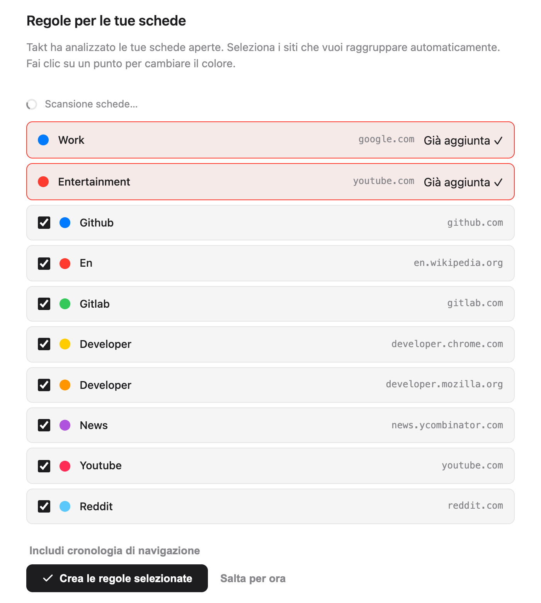
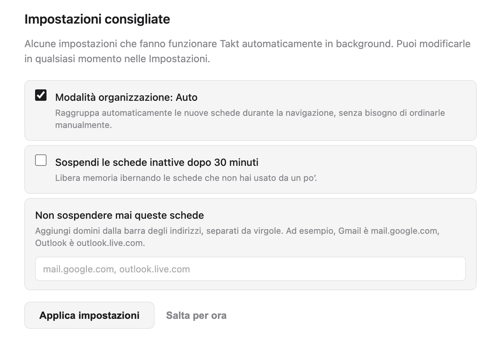
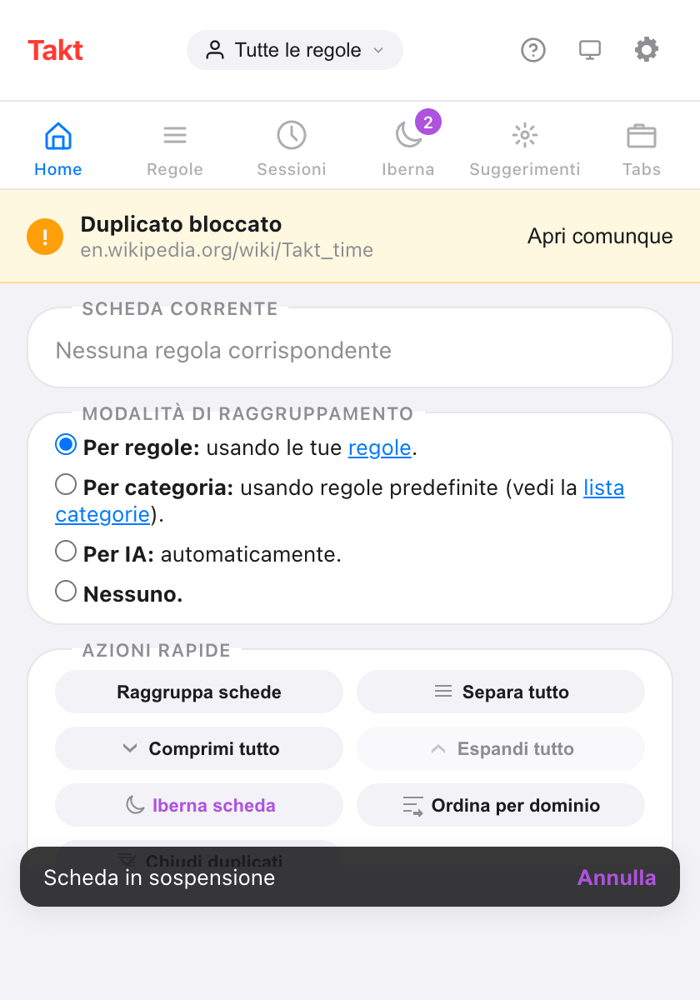
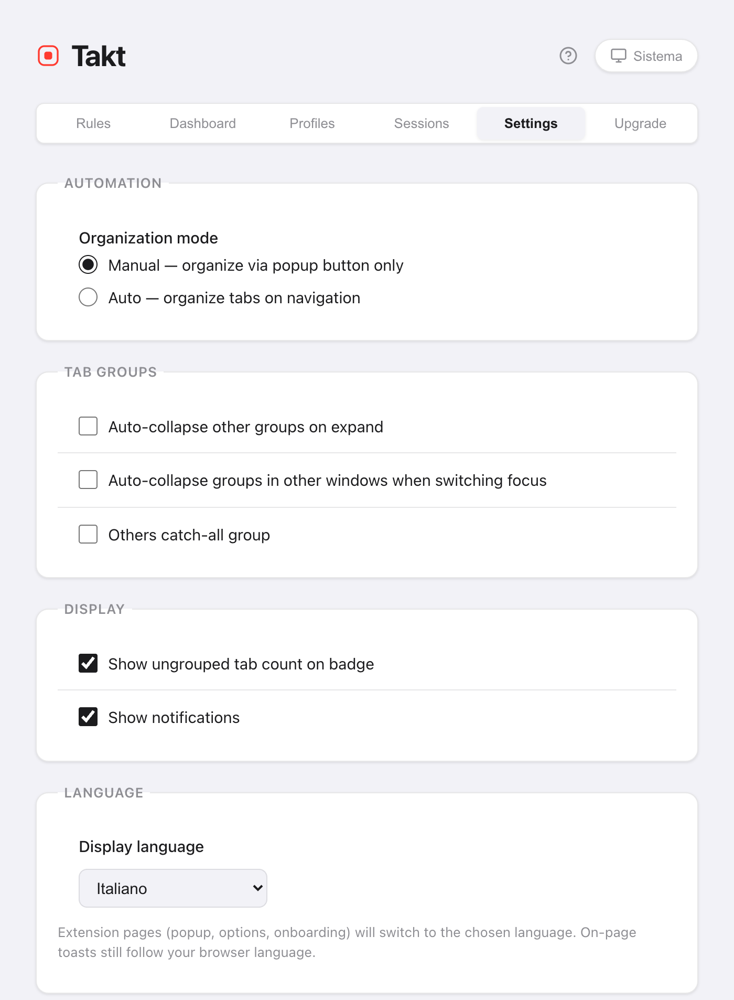

In breve: la pagina di benvenuto fa la configurazione al posto tuo.
- Elenca i siti delle schede aperte. Ogni sito che spunti diventa una regola.
- Takt raggruppa le schede appena le regole esistono.
- Il popup contiene i comandi di tutti i giorni. La pagina delle opzioni contiene regole, impostazioni e piani.
- Nessun account. Il piano gratuito include 5 regole.
Cosa succede quando installo Takt?
Installa Takt dal Chrome Web Store. Succedono due cose:
- Takt aggiunge due regole iniziali: Work (google.com, blu) ed Entertainment (youtube.com, rosso).
- Si apre una pagina di benvenuto in una nuova scheda.
Fissa Takt dal menu Estensioni di Chrome (l'icona del puzzle), così il popup è sempre a un clic.
Come scelgo le prime regole?
La pagina di benvenuto analizza le schede aperte ed elenca gli 8 siti che hai aperto più spesso. Le due regole iniziali stanno in cima, contrassegnate da Già aggiunta.
- Togli la spunta ai siti che non vuoi raggruppare. All'inizio sono tutti spuntati.
- Fai clic su un pallino colorato per scorrere gli 8 colori dei gruppi di Chrome.
- Fai clic su Crea le regole selezionate.
Takt crea le regole e raggruppa subito le schede aperte. La pagina mostra il risultato, per esempio "12 schede raggruppate in 4 gruppi".
Nel piano gratuito le due regole iniziali contano nel limite di 5 regole. Quindi ne restano 3. Takt tiene i primi 3 siti spuntati e ti dice quanti ne ha lasciati fuori. Se ti importa quali 3 vengono tenuti, togli prima la spunta agli altri.

Conviene lasciare che Takt analizzi la cronologia?
È facoltativo. Fai clic su Includi cronologia di navigazione e Chrome ti chiede l'autorizzazione alla cronologia. Se la concedi, Takt aggiunge al conteggio le visite degli ultimi 7 giorni, pesate in base a quanto spesso hai visitato ogni sito, e ricostruisce l'elenco.
Il conteggio avviene nel browser. Non viene inviato niente da nessuna parte. Se salti questo passaggio, i suggerimenti vengono solo dalle schede aperte.
Quali impostazioni consigliate conviene tenere?
| Impostazione | Nella pagina di benvenuto | Cosa fa |
|---|---|---|
| Modalità organizzazione: Auto | Spuntata | Le nuove schede vengono raggruppate mentre si caricano. Senza spunta (modalità Manual), Takt raggruppa solo quando fai clic su Raggruppa schede. |
| Sospendi le schede inattive dopo 30 minuti | Non spuntata | Scarica dalla memoria le schede inattive da 30 minuti. Restano nella barra delle schede. |
| Non sospendere mai queste schede | Vuoto | Domini che non vengono mai scaricati, come mail.google.com. |
Fai clic su Applica impostazioni o Fine e Takt salva le caselle esattamente come le hai lasciate. Puoi cambiare tutte e tre le impostazioni in seguito nella scheda Settings della pagina delle opzioni.

Possono comparire altre due sezioni. Se l'IA locale di Chrome non è disponibile, un pulsante apre le impostazioni IA di Chrome e la pagina ricontrolla quando torni. La pagina mostra anche il Cambio rapido (Alt+Shift+Space), che è una funzione Premium.
Posso rivedere la pagina di benvenuto?
Sì. Apri la pagina delle opzioni, vai su Settings → Support & Feedback e fai clic su Replay welcome tour. La pagina analizza di nuovo le schede, così puoi aggiungere regole per i siti che hai iniziato a usare nel frattempo.
Quale modalità di raggruppamento scegliere?
Apri il popup. Il riquadro Home ha un selettore Modalità di raggruppamento con quattro opzioni:
| Modalità | Sceglila se |
|---|---|
| Per regole (predefinita) | Vuoi gli stessi siti sempre nello stesso gruppo con nome. |
| Per categoria | Non vuoi scrivere regole. 20 categorie fisse, come Development e News. |
| Per IA | Vuoi gruppi per argomento. Li nomina il modello locale di Chrome. |
| Nessuno | Vuoi la prevenzione dei duplicati e gli altri strumenti, ma nessun raggruppamento. |
Categoria e IA sono gratuite fino a 5 gruppi. I dettagli in raggruppare le schede per categoria o con l'IA.
Come scrivo una regola mia?
Fai clic sull'icona a forma di ingranaggio nel popup per aprire la pagina delle opzioni. In Rules, fai clic su New Rule, aggiungi una condizione come URL · Domain · github.com, dai un nome al gruppo, scegli un colore e salva. La guida completa: come raggruppare automaticamente le schede in Chrome.
Dove si trova tutto in Takt?
Il popup serve per l'uso quotidiano. Ha sei riquadri:
| Riquadro del popup | Cosa contiene |
|---|---|
| Home | La regola che corrisponde alla scheda corrente, la modalità di raggruppamento, azioni rapide come Raggruppa schede e Comprimi tutto |
| Regole | Tutte le regole e un link per gestirle |
| Sessioni | Spazi di lavoro salvati Premium |
| Iberna | Le schede che hai ibernato, pronte da riattivare |
| Suggerimenti | Suggerimenti di regole per i siti che usi spesso |
| Tabs | Tutte le schede aperte divise per gruppo, con una casella di ricerca |

La pagina delle opzioni serve per la configurazione. Le sue schede sono Rules, Dashboard (memoria per scheda e per gruppo, Premium), Profiles (Premium), Sessions (Premium), Settings e Upgrade.
Come cambio la lingua o il tema di Takt?
Lingua. Vai su Settings → Language → Display language. Scegli English, Français, Español, Italiano, Deutsch o Português, oppure Use browser default (la lingua del browser). La scelta è indipendente dalla lingua di Chrome. Popup, pagina delle opzioni e pagina di benvenuto cambiano lingua; la pagina si ricarica per applicarla. I piccoli avvisi che Takt mostra dentro le pagine web seguono comunque la lingua di Chrome.
Tema. Fai clic sul pulsante del tema nell'intestazione del popup o della pagina delle opzioni. Passa in sequenza tra Sistema, Chiaro e Scuro. Sistema segue il sistema operativo. Entrambe le scelte vengono salvate con le altre impostazioni.

Cosa non fa la configurazione
- I suggerimenti sono sito per sito. La pagina di benvenuto crea una regola di dominio per ogni sito. Per pattern come "tutte le pull request" scrivi tu regole glob o regex (Premium).
- In modalità Per regole i siti sconosciuti restano fuori dai gruppi. Aggiungi una regola o passa a Per categoria o Per IA.
- Il piano gratuito si ferma a 5 regole. Vedi cosa includono Free e Premium.
Due minuti dall'installazione alle schede raggruppate.
Aggiungi Takt a Chrome, è gratisDomande frequenti
Takt è gratuito?
Sì. Il piano gratuito include 5 regole, il raggruppamento per categoria e con IA fino a 5 gruppi, la prevenzione dei duplicati, la sospensione automatica e le azioni rapide del popup. Premium costa $3/mese o $30/anno.
Serve un account per usare Takt?
No. Takt non ha account. Le regole e le impostazioni sono salvate in Chrome. Vedi cosa fa Takt con i tuoi dati.
Come riapro la pagina di benvenuto?
Pagina delle opzioni → Settings → Support & Feedback → Replay welcome tour.
Takt può usare una lingua diversa da quella di Chrome?
Sì. In Settings → Language scegli una delle 6 lingue. Popup, opzioni e pagina di benvenuto cambiano lingua; gli avvisi mostrati dentro le pagine web seguono comunque la lingua di Chrome.